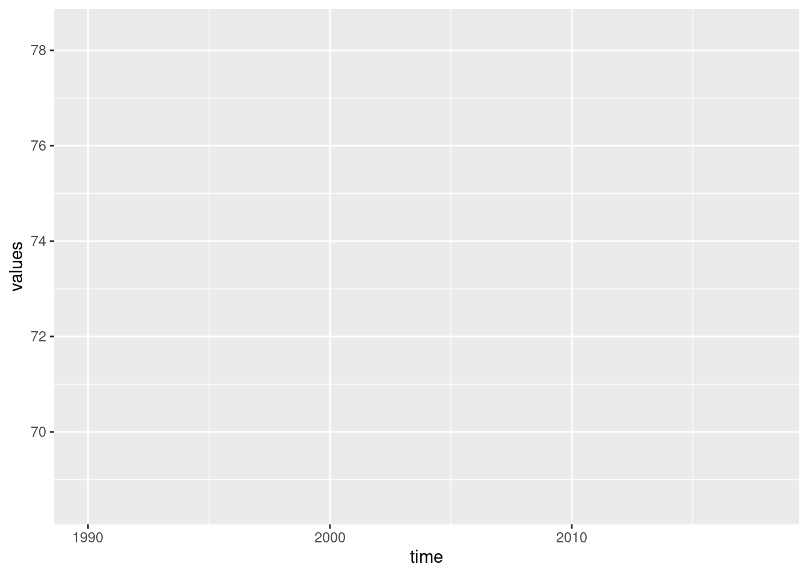
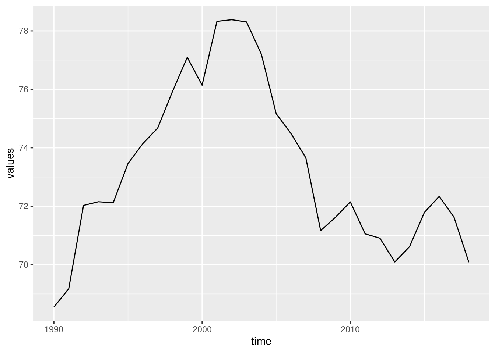
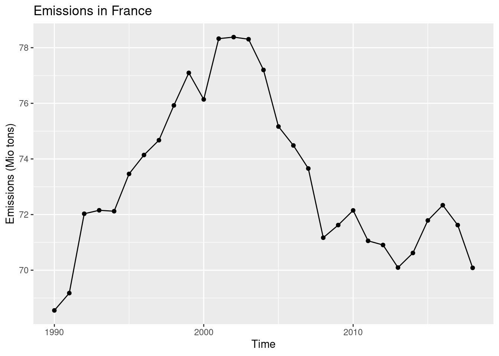
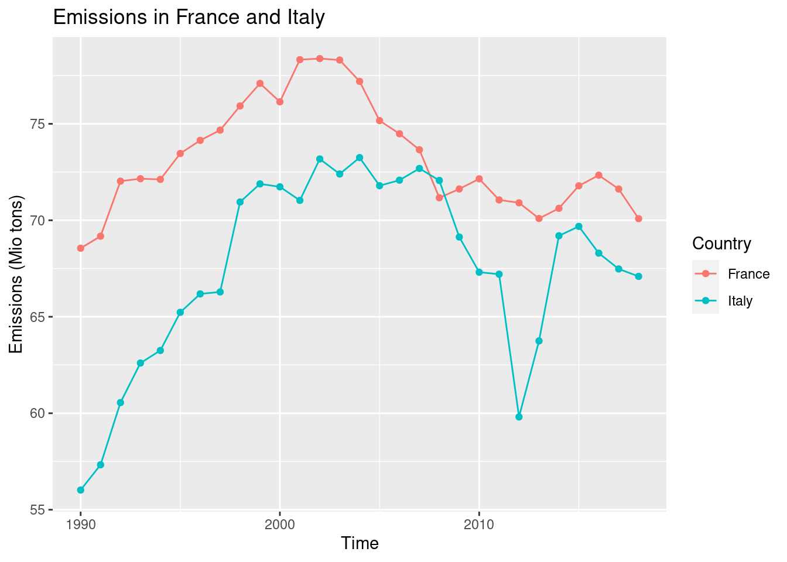
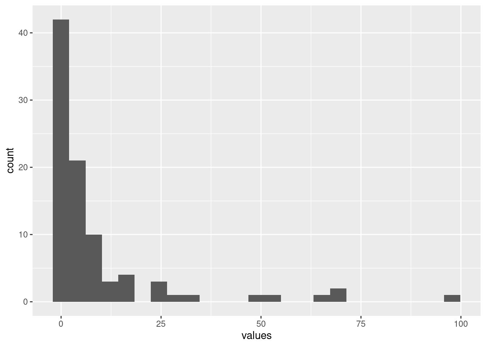
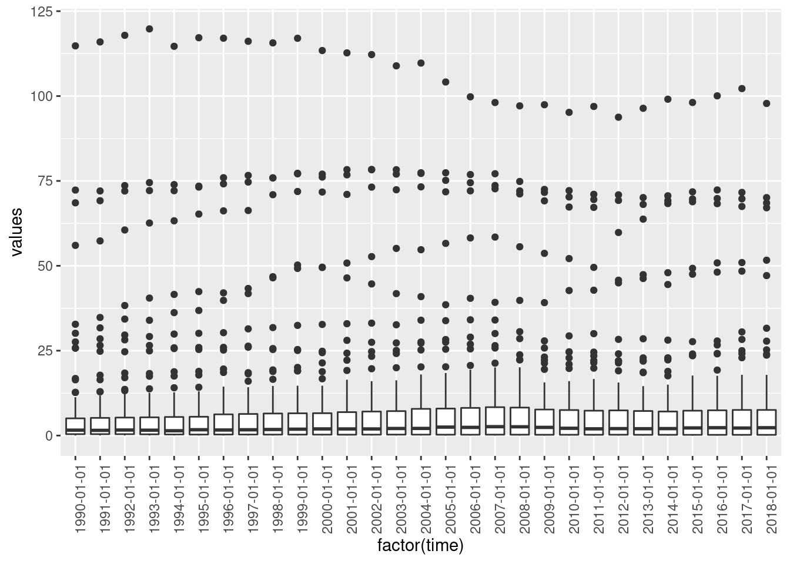
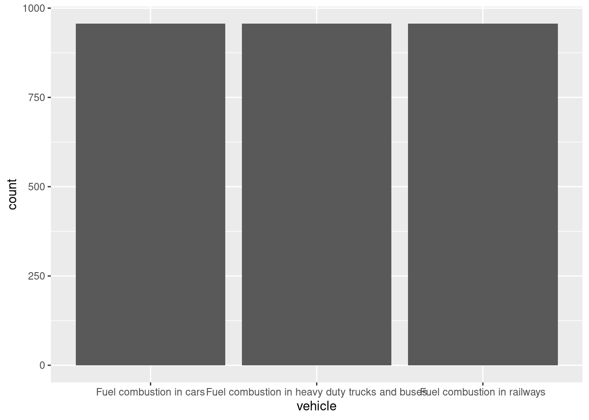

4 Import, visualize and explore data
- Import data into R
-
Explain the general call to the function
ggplot() - Plot 5 frequently used types of graphics
4.1 Data import from text files
To import a data set from a text file (e.g. csv, .txt, .dat) into R, we will use the library readr which is part of the tydiverse. We first load the library.
library(tidyverse)Let’s assume that the data is stored in the folder data. If this is not your case, change the path accordingly. To load the data, we can choose among several functions that all start with read_. The most generic one is read_delim() where we can specify how the columns are separated (delimited) in the data file.
emissions <- read_delim(file = 'data/emissions.csv', delim = ';')## Rows: 2871 Columns: 6
## ── Column specification ────────────────────────────────────────────────────────
## Delimiter: ";"
## chr (4): unit, airpol, vehicle, geo
## dbl (1): values
## date (1): time
##
## ℹ Use `spec()` to retrieve the full column specification for this data.
## ℹ Specify the column types or set `show_col_types = FALSE` to quiet this message.Let’s have a look at the data. This is a data set on greenhouse gas emissions by source sector in the EU that I downloaded from eurostat on 2021-04-30. It contains the greenhouse gas emissions in CO2 equivalent, in Mio tonnes, per vehicle type. The database could be a great source for data in your reports 😄.
emissions## # A tibble: 2,871 × 6
## unit airpol vehicle geo time values
## <chr> <chr> <chr> <chr> <date> <dbl>
## 1 Million tonnes Greenhouse gases (CO2, N2O in… Fuel c… Aust… 2018-01-01 14.4
## 2 Million tonnes Greenhouse gases (CO2, N2O in… Fuel c… Belg… 2018-01-01 14.4
## 3 Million tonnes Greenhouse gases (CO2, N2O in… Fuel c… Bulg… 2018-01-01 5.78
## 4 Million tonnes Greenhouse gases (CO2, N2O in… Fuel c… Swit… 2018-01-01 11.0
## 5 Million tonnes Greenhouse gases (CO2, N2O in… Fuel c… Cypr… 2018-01-01 1.38
## 6 Million tonnes Greenhouse gases (CO2, N2O in… Fuel c… Czec… 2018-01-01 11.9
## 7 Million tonnes Greenhouse gases (CO2, N2O in… Fuel c… Germ… 2018-01-01 97.8
## 8 Million tonnes Greenhouse gases (CO2, N2O in… Fuel c… Denm… 2018-01-01 6.85
## 9 Million tonnes Greenhouse gases (CO2, N2O in… Fuel c… Esto… 2018-01-01 1.52
## 10 Million tonnes Greenhouse gases (CO2, N2O in… Fuel c… Gree… 2018-01-01 7.61
## # … with 2,861 more rowsThe result of reading the data with any function in the library readr is always a tibble. You can see that none of the variables is a factor. This is the default behaviour of readr. If you want a variable to be coded as a factor then you have to transform it manually, preferably with functions from the package forcats.
Let’s have a brief look at the data set.
summary(emissions)## unit airpol vehicle geo
## Length:2871 Length:2871 Length:2871 Length:2871
## Class :character Class :character Class :character Class :character
## Mode :character Mode :character Mode :character Mode :character
##
##
##
##
## time values
## Min. :1990-01-01 Min. : 0.00609
## 1st Qu.:1997-01-01 1st Qu.: 0.25564
## Median :2004-01-01 Median : 1.92403
## Mean :2004-01-01 Mean : 8.52836
## 3rd Qu.:2011-01-01 3rd Qu.: 6.93899
## Max. :2018-01-01 Max. :119.77824
## NA's :232For character variables, summary() does not count the frequency of different values. However, we can get this information with the function unique().
length(unique(emissions$geo))## [1] 33The data set contains measurements for 33 EU countries. We can also ask which different types of vehicle are recorded.
unique(emissions$vehicle)## [1] "Fuel combustion in cars"
## [2] "Fuel combustion in heavy duty trucks and buses"
## [3] "Fuel combustion in railways"4.2 Visualization with the library ggplot2
The library ggplot2 is a powerful package for data visualization. The name comes from the grammar of graphics and hints at a systematic approach to visualization. In a nutshell, ggplot2 defines a statistical graphic as follows:
A statistical graphic is a
mappingof variables in adataset toaesthetic attributes ofgeometric objects.
In ggplot2, a graphic is built up step by step, starting with a call to the core function ggplot(). We have to specify the following elements:
data: the data set containing the variables to be visualized.aes: (aesthetic) attributes for the geometric object to be visualized. This can be the x and y variables, colour, shape, grouping variable etc.geom: the geometric object we want to plot, i.e. lines, points, bars, boxes etc.
4.2.1 Line plot
We start with the line plot that is particularly suited for time series. Because plotting 33 countries in one graph is too much, we first filter for France and emissions from cars.
emissions_france <- emissions %>%
filter(geo == 'France' & vehicle == 'Fuel combustion in cars')ggplot(data = emissions_france, mapping = aes(x = time, y = values))
This call to ggplot() prepares the plotting area as requested, but does not show anything because we did not specify any geometric object. All geometric objects begin with geom_. Every further step in building up the plot is appended to the core call by a +.
ggplot(data = emissions_france, mapping = aes(x = time, y = values)) +
geom_line()
This call can be verbalized like following:
Take the data set
emissionsand map the following attributes:- on the \(x\)-axis, the variable
time - on the \(y\)-axis, the variable
values
- on the \(x\)-axis, the variable
Plot the data as a line (
geom_line())
In order for the plot to be useful, we should label the axes correctly (and give it a title, if no figure caption is shown). This is done by adding the function labs().
ggplot(data = emissions_france, mapping = aes(x = time, y = values)) +
geom_line() +
labs(x = 'Time', y = 'Emissions (Mio tons)', title = 'Emissions in France')4.2.2 Point plot
We can add points to this plot with geom_point(). Normally, I wouldn’t do it for this time series, but I want to show this geom 😄.
ggplot(data = emissions_france, mapping = aes(x = time, y = values)) +
geom_line() +
geom_point() +
labs(x = 'Time', y = 'Emissions (Mio tons)', title = 'Emissions in France')
If we select two countries, then a further aesthetic will be required to distinguish the time series. Let’s select France and Italy.
emissions_france_italy <- emissions %>%
filter(geo %in% c('France', 'Italy') & vehicle == 'Fuel combustion in cars')We plot the countries using different colours. Note that we do not (yet) select the colours manually, but specify the variable that will be used to distinguish the time series. The colours are chosen one by country automatically.
ggplot(data = emissions_france_italy, mapping = aes(x = time, y = values, colour = geo)) +
geom_line() +
geom_point() +
labs(x = 'Time', y = 'Emissions (Mio tons)', title = 'Emissions in France and Italy', colour = 'Country')
The legend comes for free! We can change the title of the legend by setting colour = 'Country' in the call to labs().
4.3 Histogram
Let’s have a look at the distribution of emissions in the year 2018. We have to filter the data first.
emissions_2018 <- emissions %>%
filter(time == '2018-01-01')We plot the data in a histogram that shows the absolute frequencies of the data (i.e. how many data points fall in a particular interval of emissions). It shows the distribution of a continuous variable. For a histogram, we only specify the x variable, the frequencies are calculated by geom_histogram() directly. We specify 25 bins (intervals). If you are not familiar with this kind of statistical summaries, please have a look at the Appendix A in Ismay and Kim (2021) and read the part A.1.5 Distribution.
ggplot(data = emissions_2018, mapping = aes(x = values)) +
geom_histogram(bins = 25)## Warning: Removed 8 rows containing non-finite values (stat_bin).
4.4 Boxplot
A boxplot calculates some prominent statistics of a data set and plots them in the form of a box with ‘whiskers’ (thus also called box-and-whiskers plot). Basically, it is the same as calculating the summary() (five-numbers: min, max, 25%, 50% and 75% quantiles), but as a figure. If you are not familiar with this kind of statistical summaries, please have a look at the Appendix A in Ismay and Kim (2021) and read the part A.1.4 Five-number summary.
Let’s have a look at this kind of summary plot. How are the emissions distributed by year? We have to convert time to a factor variable to display the data correctly (try out what happens if you don’t convert it).
ggplot(data = emissions, mapping = aes(x = factor(time), y = values)) +
geom_boxplot()## Warning: Removed 232 rows containing non-finite values (stat_boxplot).
Hmmm, the labels on the \(x\)-axis are ugly. Let’s tune them a little (we will do more tuning in later sessions).
ggplot(data = emissions, mapping = aes(x = factor(time), y = values)) +
geom_boxplot() +
theme(axis.text.x = element_text(angle = 90))## Warning: Removed 232 rows containing non-finite values (stat_boxplot).
4.4.1 Barplot
The last geom we want to see is geom_bar(). We would like to know how many data entries does emissions contain per vehicle.
ggplot(data = emissions, mapping = aes(x = vehicle)) +
geom_bar()Admittedly, a boring plot 😄, the number of entries is identical.
4.5 Practice on your own!
The histogram, the boxplot and the barplot plotted above are not labelled correctly. Correct the axis labels and find good titles for the graphs.
Plot the time series of GDP from the data set
gapminderfor France and Germany. Filter the data like this:
france_germany <- gapminder %>% filter(country %in% c('France', 'Germany'))Plot the life expectancy vs. GDP in 2007, use the data set
gapminder. Pick the code for filtering the data in task C.1.3. Use the aesthetics colour and size. Have an educated guess on how to change the title of the legends (or google for it 😄).How is the GDP distributed in Africa and Europe in 2007? Use the data set
gapminder. Filter the data like this:
africa_europe <- gapminder2007 %>% filter(continent %in% c('Africa', 'Europe')).
Plot the data as a histogram and use the aesthetic fill instead of colour to distinguish between continents.How is the GDP distributed on different continents in 2007? Use the data set
gapminder. Plot the data as a boxplot.How many data points does
gapmindercontain per continent? Visualize in a barplot.
4.6 Reading assignment
Chapter 2.1 in Ismay and Kim (2021)
4.7 Turning in your work
- Save your R Notebook as an *.Rmd file.
- Upload your R Notebook to ILIAS. You don’t need to upload the .nb.html file. You will find an upload option in today’s session.
- You should receive a solution file after your upload. Be sure to upload before the deadline!
4.8 Additional reading
Chapters 2.2 to 2.9 in Ismay and Kim (2021)